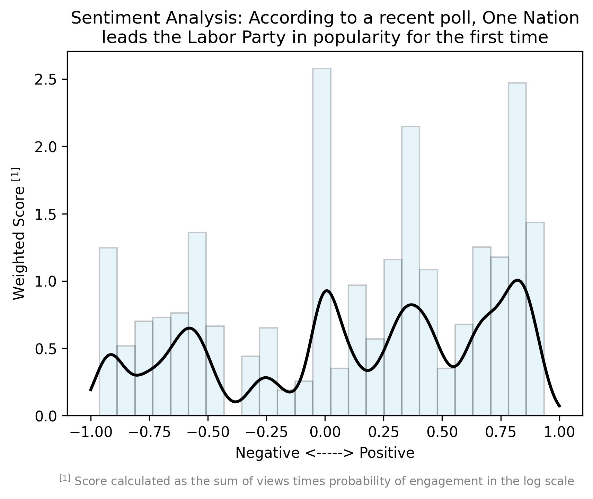
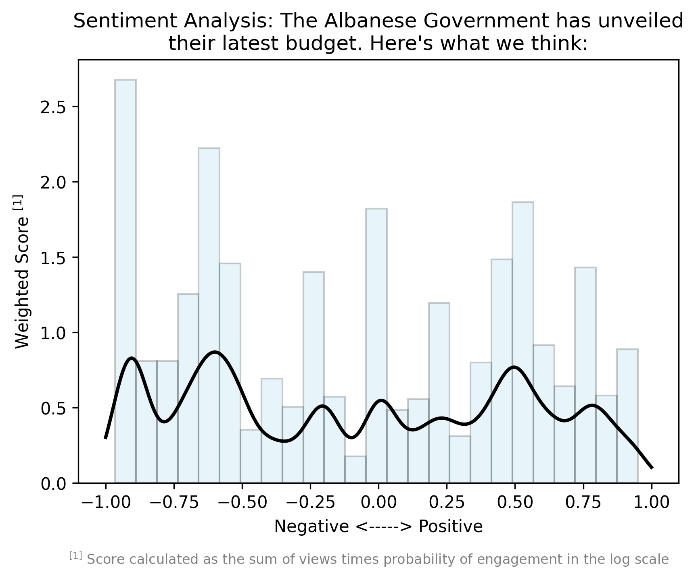
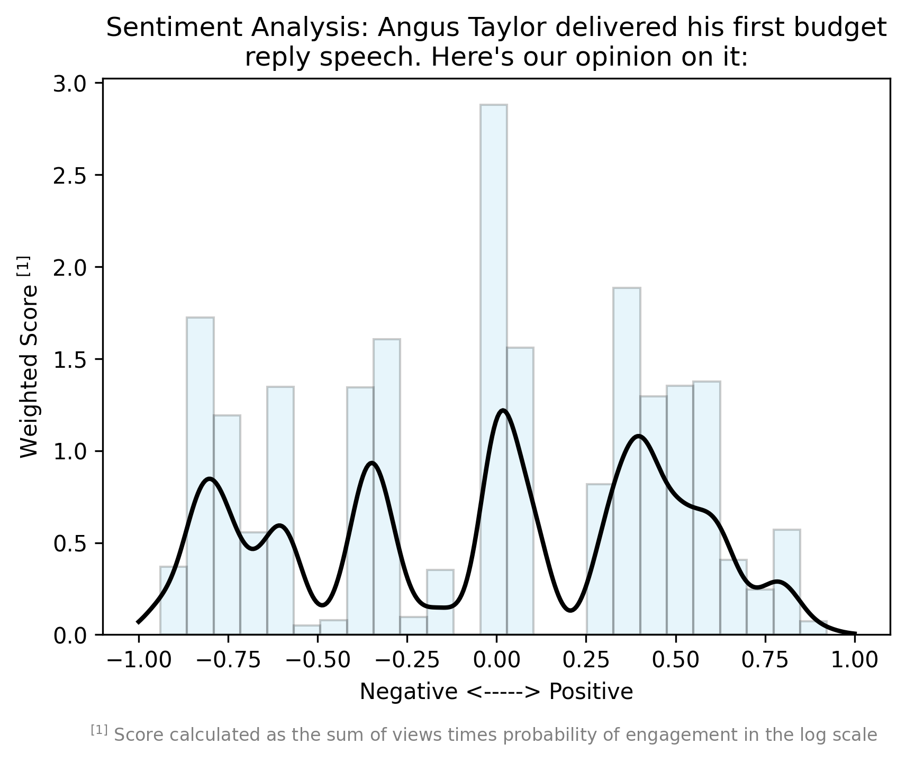
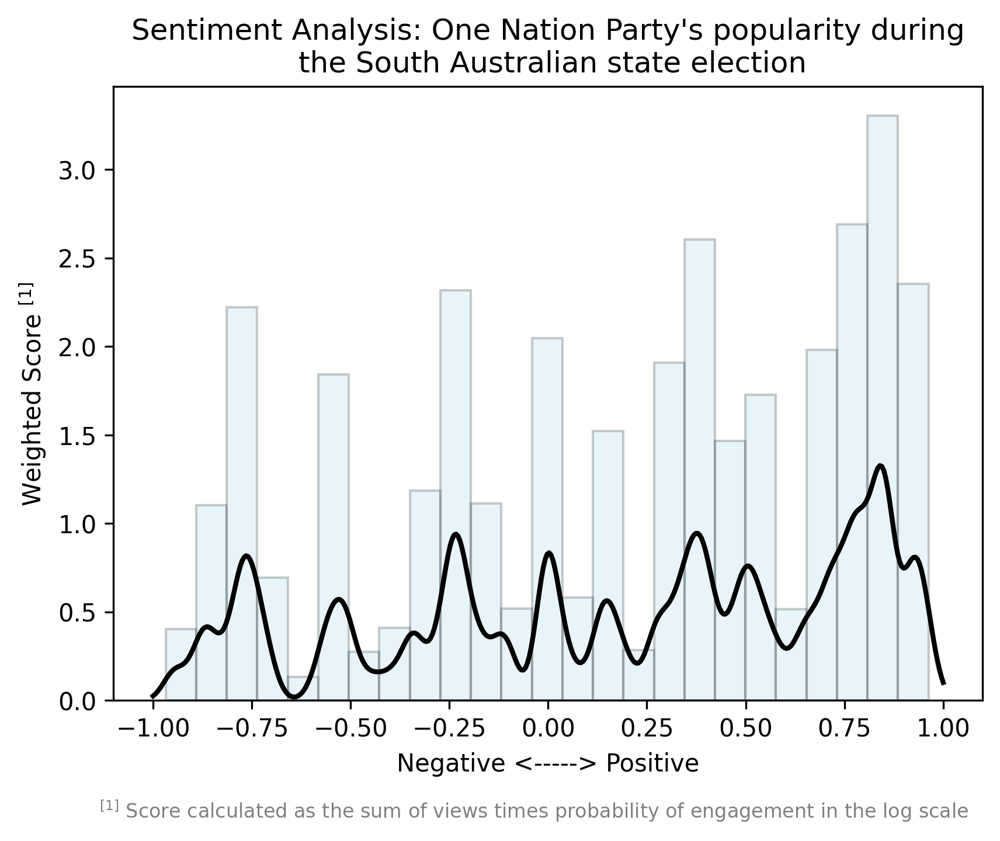
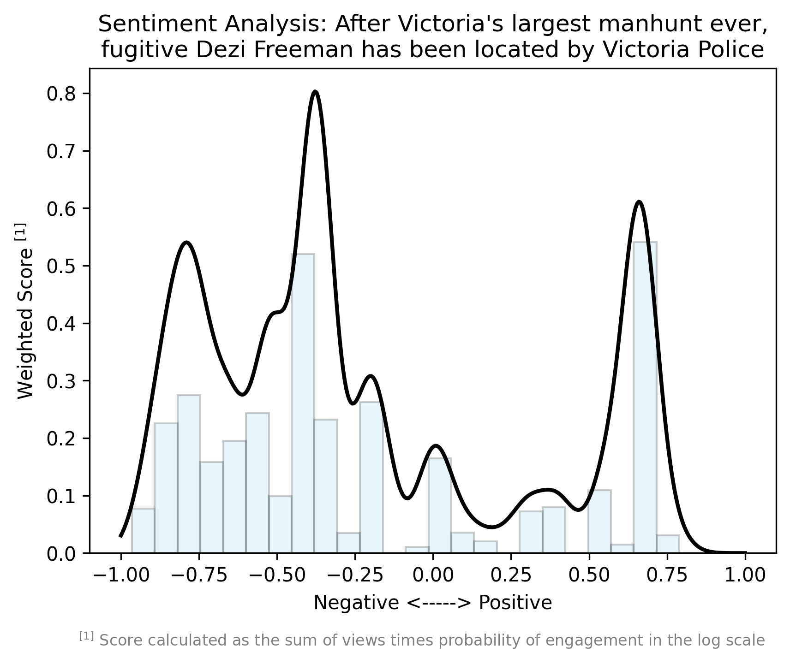
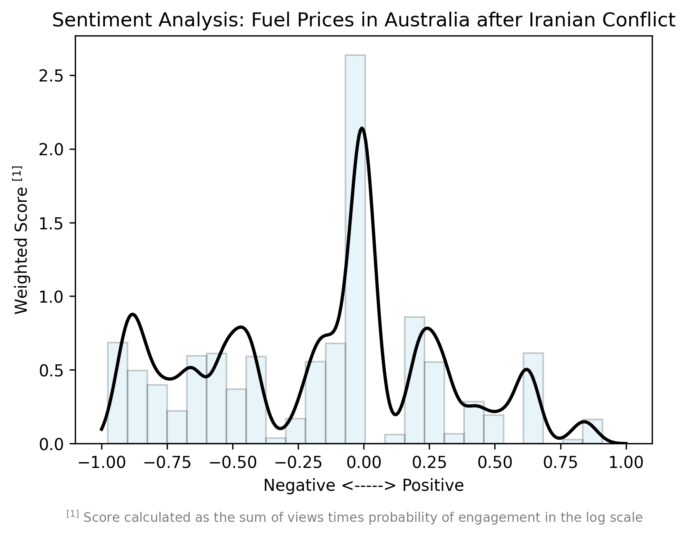
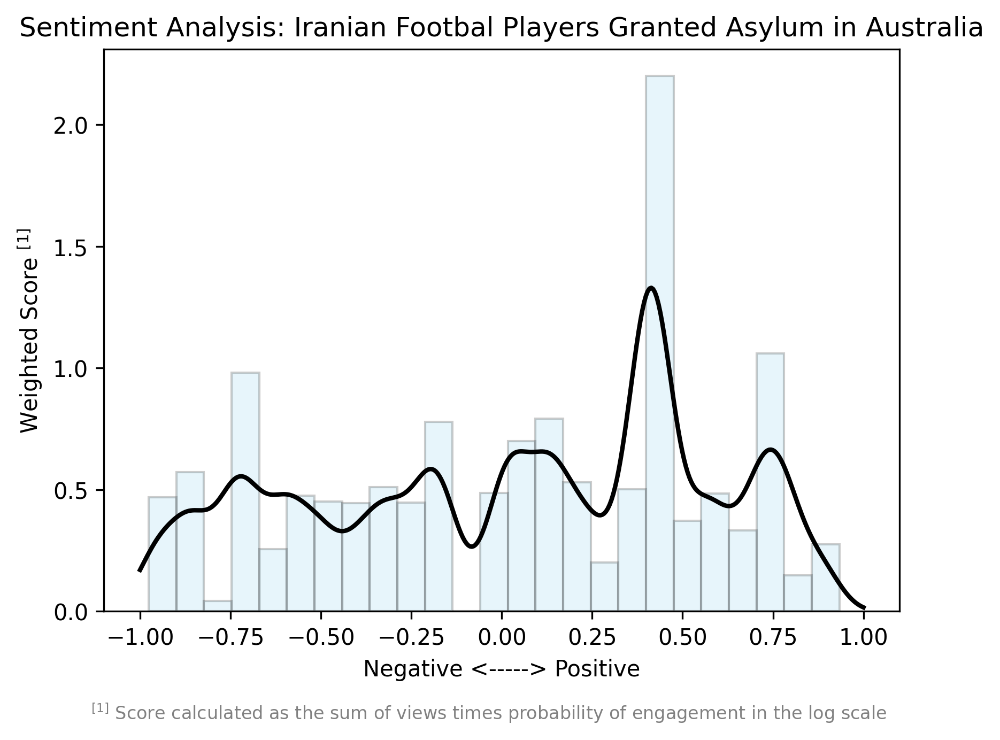
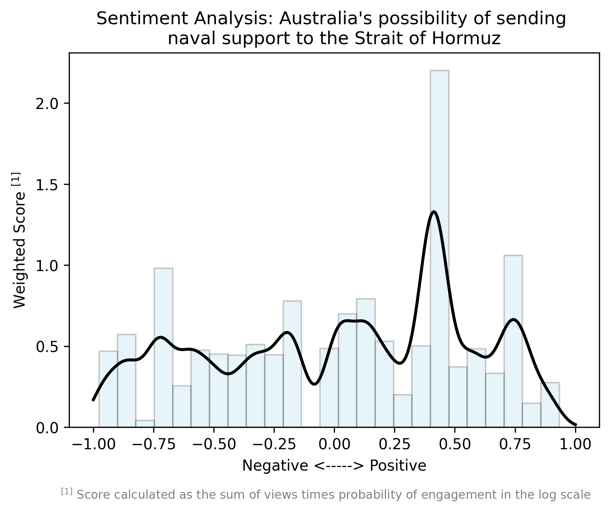

Analysing Australian public opinion on political issues — powered by Twitter data, NLP, and data visualisation. Follow along at @publicmetricsAU.
A student-led data science project using the Twitter / X API to measure and visualise Australian public sentiment on key political issues. Follow the graphs at @publicmetricsAU.
Every graph published to @publicmetricsAU — click any graph to view it full size.

Weighted sentiment distribution on public reaction to the Albanese Government's latest federal budget.
Download Data (JSON)
Weighted sentiment distribution on public reaction to the Albanese Government's latest federal budget.
Download Data (JSON)
Public opinion on Angus Taylor's first budget reply speech as Opposition Leader.
Download Data (JSON)
Sentiment tracking One Nation Party's popularity during the South Australian state election.
Data Unavailable
Public sentiment after Victoria's largest manhunt — fugitive Dezi Freeman located by Victoria Police.
Download Data (JSON)
Australian opinion on fuel price rises following escalation of conflict in Iran.
Data Unavailable
Sentiment on Iranian football players being granted asylum in Australia.
Data Unavailable
Public opinion on Australia potentially sending naval support to the Strait of Hormuz.
Data UnavailableNew graphs are posted regularly to @publicmetricsAU — follow along for the latest analysis.
I'm a high school student with a passion for data, technology, and Australian politics. Australian Political Sentiments started as a personal project to understand how Australians engage with political issues on social media.
I'm applying to volunteer with a local Victorian MP ahead of the 2026 state election, where I hope to develop this sentiment analyser further and contribute meaningful data insights to a real political campaign.